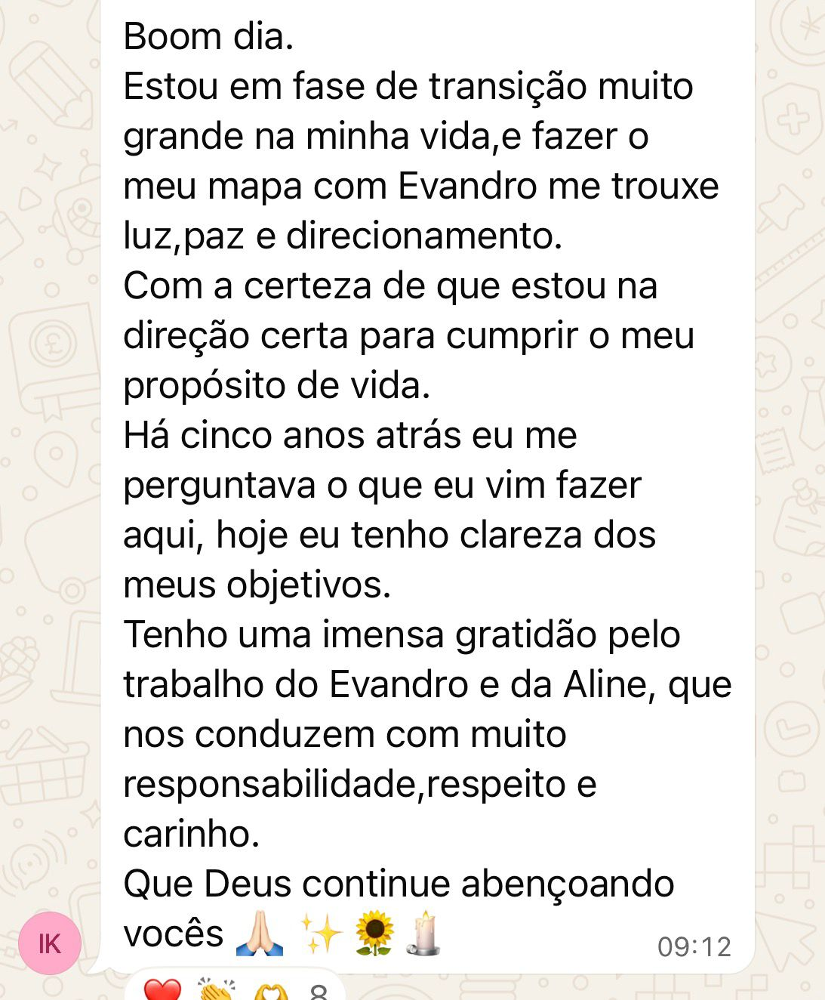
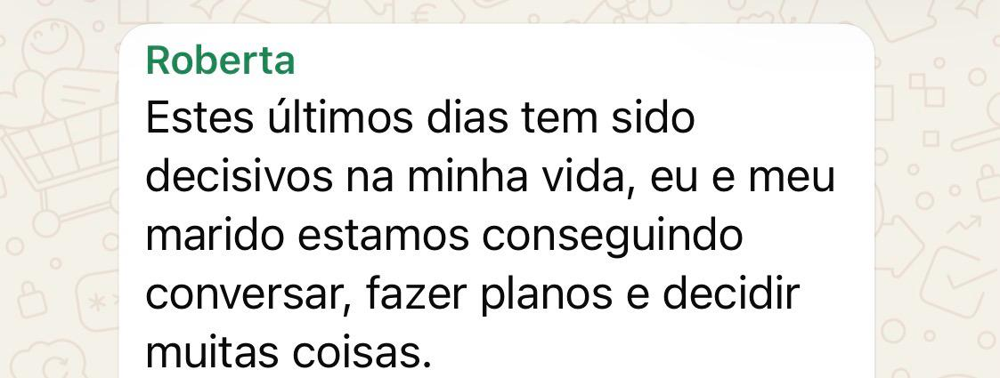
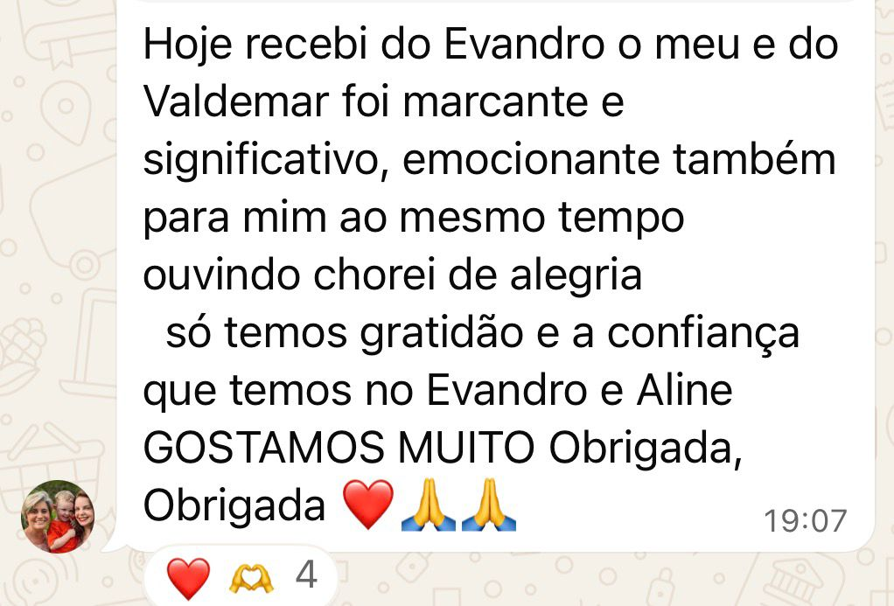
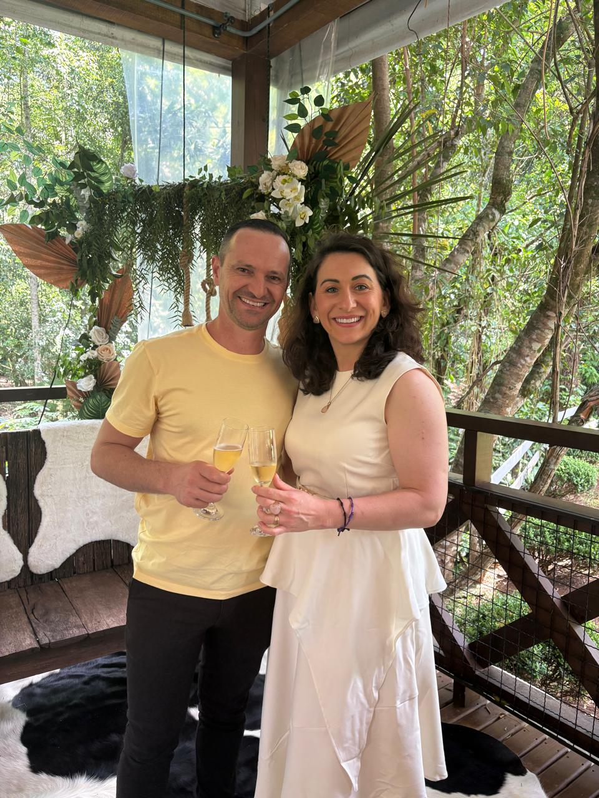

Diagnóstico Exclusivo
Qual ferida do pai
está sabotando seu
casamento?
Responda 7 perguntas e descubra o padrão invisível que você aprendeu na infância e que está afetando a forma como você ama hoje.
Leva menos de 2 minutos. Resultado imediato.
Último passo
Preencha seus dados para
ver seu resultado
Falta só um passo para liberar seu diagnóstico completo.
Preencha seus dados para visualizar o resultado final.
Seu resultado aparece imediatamente após o envio.
Analisando seu padrão
Estamos cruzando suas respostas
Identificando a raiz emocional que mais influencia a forma como você vive vínculo, afeto e insegurança no casamento.
Isso leva só alguns segundos.
Seu resultado
A Origem
O Padrão no Casamento
O Impacto
Você quer curar a origem emocional, espiritual e cármica desse padrão que se repete no casamento?
O Mapa da Relação Cármica, Espiritual e Emocional é o primeiro passo para iniciar sua cura e quebrar esse padrão.
Esse não é só um mapa de leitura. É um mapa de cura e libertação.
Ele revela e cura a raiz emocional, espiritual e cármica dos padrões que fazem você repetir no amor as feridas vividas com o pai.
Com esse mapa, você entende a origem da dor, reconhece o que ainda está comandando suas relações e acessa um caminho de cura para se libertar de ciclos de sofrimento, insegurança, bloqueios e relações que machucam.
Pare de repetir no relacionamento atual dores que começaram com o pai.
Depoimentos
Relatos reais de pessoas que já passaram pelo processo e conseguiram quebrar padrões, ganhar clareza e transformar suas relações.




Alinne de Pasinatto e Evandro Favoretto são casados há 17 anos e atuam há 15 anos como mentores de casais, conduzindo homens e mulheres em jornadas de cura relacional, emocional e espiritual.
Ao longo dessa caminhada, já atenderam mais de 10 mil casais em processos de cura e quebra de padrões.